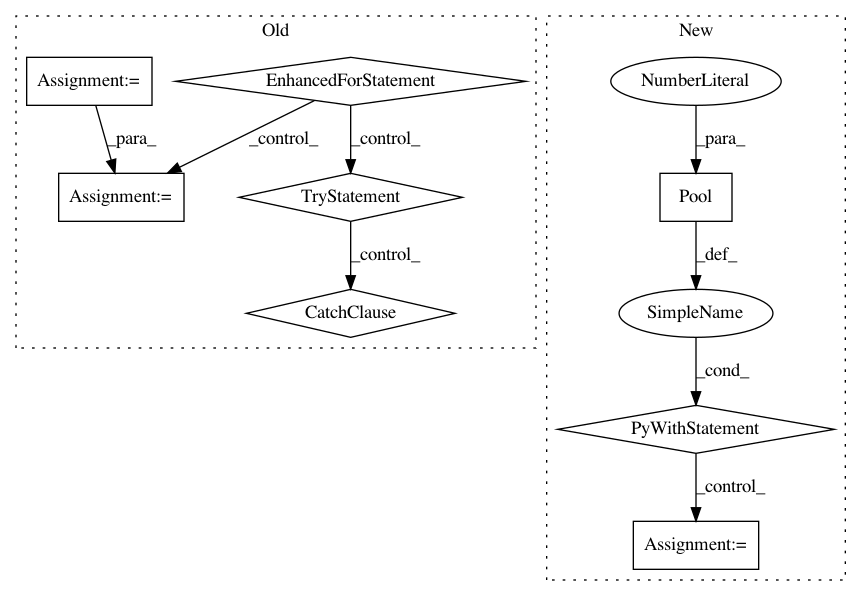

12b19fcbf91e9d02bd8b2a67ce96e2d00d1d5ed7,foreman/data_refinery_foreman/foreman/management/commands/check_computed_files.py,Command,handle,#Command#,19
Before Change
ref https://github.com/AlexsLemonade/refinebio/issues/1696
computed_files_queryset = ComputedFile.objects.filter(s3_key__isnull=False, s3_bucket__isnull=False)
total_files = 0
missing_file_ids = []
for computed_file in queryset_iterator(computed_files_queryset, PAGE_SIZE):
total_files += 1
// check that file is present in S3, no need to download the entire object
// https://stackoverflow.com/a/38376288/763705
// https://boto3.amazonaws.com/v1/documentation/api/latest/reference/services/s3.html//S3.Client.head_object
try:
S3.head_object(Bucket=computed_file.s3_bucket, Key=computed_file.s3_key)
except ClientError:
// Not found
logger.debug("Computed file not found on S3 - will remove S3 fields.", computed_file=computed_file)
missing_file_ids.append(computed_file.pk)
// provide some info while the command is running.
if total_files % PAGE_SIZE == 0:
logger.info("Checked %i computed files to see if they are in S3, so far found %i" % (total_files, len(missing_file_ids)))
// Update all computed files in one query
logger.info("Found %i files that were missing in S3, clearing s3_key and s3_bucket now." % len(missing_file_ids))
ComputedFile.objects.filter(id__in=missing_file_ids).update(s3_key=None, s3_bucket=None)
After Change
results = queryset_page_iterator(computed_files_queryset, PAGE_SIZE)
connections.close_all()
with Pool(processes=8) as pool:
pool.apply(check_page, results)
In pattern: SUPERPATTERN
Frequency: 3
Non-data size: 8
Instances
Project Name: AlexsLemonade/refinebio
Commit Name: 12b19fcbf91e9d02bd8b2a67ce96e2d00d1d5ed7
Time: 2019-10-01
Author: arielsvn@gmail.com
File Name: foreman/data_refinery_foreman/foreman/management/commands/check_computed_files.py
Class Name: Command
Method Name: handle
Project Name: uber/ludwig
Commit Name: 7d9db23a389499c2764fb850cd19f853cc3e8565
Time: 2019-08-08
Author: smiryala@uber.com
File Name: ludwig/features/image_feature.py
Class Name: ImageBaseFeature
Method Name: add_feature_data
Project Name: uber/ludwig
Commit Name: 5667af96dade79ef77194d519182d4989494b3a4
Time: 2019-08-25
Author: smiryala@uber.com
File Name: ludwig/features/image_feature.py
Class Name: ImageBaseFeature
Method Name: add_feature_data